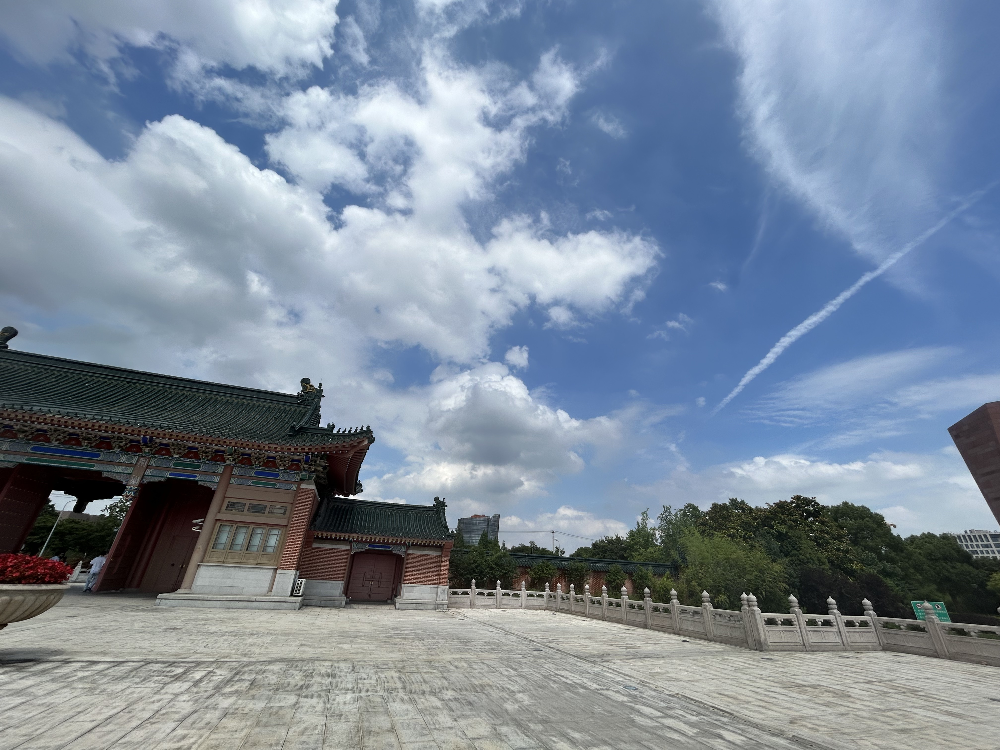
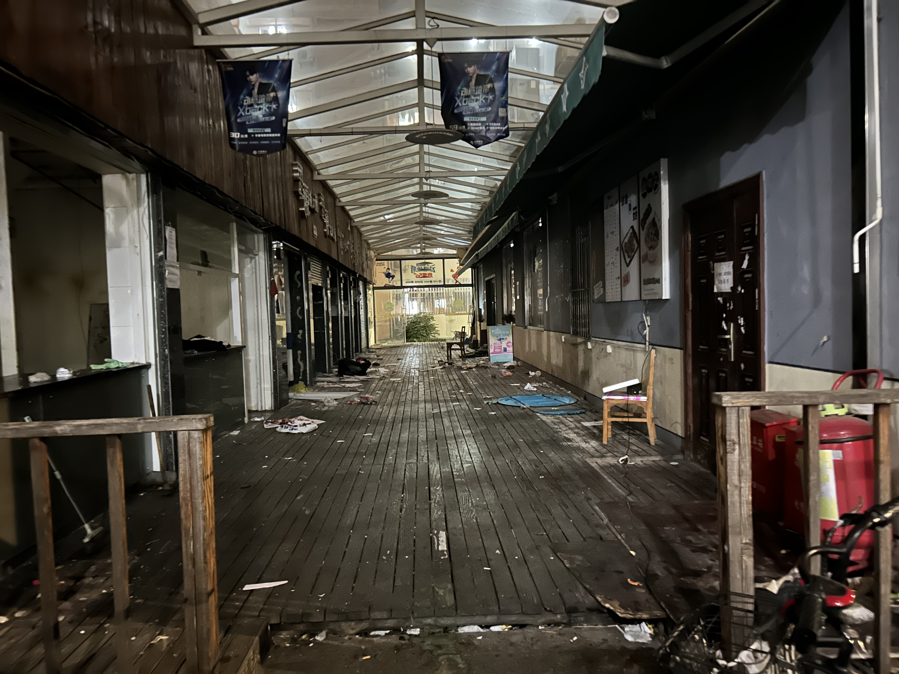

前言的前言
这篇文章初写于23年12月份，但写到一半停笔了一段时间，而后于24年1月又把它续完了。文章的内容与其说是在回忆思源街，不如说更像是回忆一些我没来得及记录的零零碎碎的交大本科生活。姑且借此载体，将这些散珠串起来。
前言
最近特别忙，主要是因为我在 MSRA 实习的那篇工作准备投了，于是便是整天的赶实验、改代码。当然人忙起来也总是有空刷社交平台的。不经意间，我在朋友圈看到了一篇由 “思源咖啡” 发的推文，内容大意是思源街因为工程原因要拆掉了，这家咖啡店很感谢同学们这么多年的陪伴之类的。
说来很遗憾，在刚看到消息的时候，我还没有立刻反应过来所谓 “思源街” 到底指的是哪条街道，毕竟 “思源” 这个词在交大可谓是无处不在：思源路、思源湖… 我刚开始还以为是玉兰苑那条路，也就是小眷村、巴比、串府那一条，因此我还有点惊诧：那条又宽又大、人流量又多，并且还是一条接近 “主干道” 的路，也能拆的嘛？后来才意识到，哦，原来是西区那条紧挨着教超的那一条。
那一条街，说来还有点对不起它，在写这篇博客之前，为了找寻他的回忆，我还专门翻了一遍相册——但很遗憾，好像一张照片也没有留下。不过也不奇怪，照片几乎都是去哪哪玩，拍的美食风景；而这条街，它的外表确实令人不敢恭维：说是街，但其实两边的墙隔的并不远，倒不如说是巷子。再加上旁边有摆放供人用餐的桌椅，使得中间那条可以走的地方更有限了。长度更是一眼望得到对面，印象中还没有一百米吧。因此也不能怪我没有拍它什么了。但要写回忆录的话，不放点照片是不是不太合适？于是之后我特地再跑过去拍了一张拆后的思源街。所有窗口店面都已经人去楼空了，不过能看出过去的布局，以及像船的甲板一样的地板。

虽然我一直说它又窄又破，但是因为种种原因，我对它还是很有感情的，现在的心情有点像《花束般的恋爱》里小娟看到喜欢的博主芽衣自杀一样。于是感慨万分，借着这个周六，我偷来一点时光，把自己对这条又破又窄的、不知道能不能称之为“街“的东西的印象写在这里。”思源思源”，这也正是思源之意啊。没留住照片，那就留些文字吧。
相遇总是伴随着离别。 ——《花束般的恋爱》，芽衣自杀时的博客
初见
我来交大的第一顿饭就是在这条街吃的。那时的我刚结束我的高三暑假，收拾了行李便急匆匆地来学校报道，由于家离上海很远，甚至不小心迟到了。到学校的时候已经是傍晚了，那时第一次来到闵行交大，觉得这个地方好大（当然现在已经不觉得了。看来对一个地方熟悉了之后，真的会觉得它越来越小啊），连西区南体旁的那条路都觉得额外的宽而远。
到学校第一件事当然是收拾宿舍、铺床单啥的。我是个喜欢把事情干完（至少干到一个检查点）再去吃饭的人，也因此常常很晚去吃饭。等我把宿舍收拾好的时候，没记错应该已经是把八九点了。我问室友现在有什么食堂还开着么，室友说，现在应该一餐、二餐都关了，但是楼下应该有些吃的。这个楼下，指的就是思源街了。
我们那时住在西一区的西15楼，再往前便是西17，西17过去就是教超和哈乐餐厅。思源街便在这俩建筑之间苟活着。我见到这条街，脑子里冒出来的第一个词是：烟火气。街的左手边是几个店，一眼望过去能看到后厨在冒着烟的那种；右手边是教超背面，没有店，但放了一些桌椅。我在那里点了一碗牛肉面，很快便端了上来。不算好吃，肉不算多，但是还挺热乎的。
至此，我记住了有这么一个在我们宿舍楼下的地方，可以买到牛肉面汤，并且在很晚的时候还开着。
下面这张是一个西区的图，是上院附近的一个路口，一般从思源门进来到西区宿舍群都是要通过这里。

夜宵
这里当然称不上好吃。但是鉴于它开得晚、离得近的优势，自然而然成为夜宵的不二之选。而且尤其是大一九月入学，在过了一两个月之后刚好到冬季，冷空气使得热热的牛肉汤更加诱人。那时我们大一上线性代数，习题课放在了周四晚上，六点开始、八点多结束。一般我是吃了晚饭去的，但可能也就吃个半饱的程度，所以等习题课下课，回宿舍路上刚好顺路去思源街点点东西，放松一下被矩阵紧绷住的神经，真是一大乐事。
并且牛肉汤面点多了，自然也会看一下其它的菜品，于是我又发现了烤冷面。说实话，我上大学之前还不知道什么叫烤冷面，听过名字但是想象中会是面条状。后面才知道，哦，其实和以前家附近的那种煎饼摊买的差不多，不过可能调料上有点区别。思源街的烤冷面是用纸杯装的，你用小卡片勾选几个加料，料用面饼卷起来，切成若干段放在杯里，给两个牙签就可以吃了。这种烤冷面重油重盐，可以起到很好的解馋作用。
打印店
夜宵的回忆在烤冷面中不声不响地就结束了——后面其实我去那的频率也越来越少。但随之而来的第二个回忆，是思源街上的一个打印店。
打印的需求在大学生群体中并不罕见。对我而言，则是因为我大二上报了一门叫做 “科学计算” 的课程（课程内容很接近数值分析），这门课的每周作业要求打印出来上交，不能是电子版。按理讲，一周的时间，把它做完并且打印出来的时间范围应该很宽裕。但是大学生就是一种这么奇妙的生物，他总是能把作业精确无误地放到期限的前一天晚上做。在前一天晚上（通常会做到很晚）做完后，打印店基本都已经关了，所以唯一能在早八之前交上作业的方案就是早起去打印。在当时，有两家打印店成为了我的通常选择：一家是我们上课的东下院（还是东上院？记不太清了）的一楼，另一家就是思源街的这个打印店。
思源街里的这个打印店极具年代气息——电脑清一色是那种十几年前流行的大屁股电脑，操作系统则是 Windows XP，上面的 Microsoft Office 版本更是某个远古版本，在上面打开自己的文件总是要担心会不会出现乱码、格式错误之类的。同时，这家打印店的电脑也没有配备任何打印系统，一个普通的学生来到店里想要打印自己手机上的文件，必须通过 USB 数据线或者在这台电脑上登陆 QQ 然后传过去；相比之下，二餐旁边的打印店就有一套专门的系统，只需要扫码就可以将文件传至电脑，我认为这是好的。
尽管这家打印店复古又麻烦，但是它也有一个“优势“：”历史底蕴“丰厚。每到考试季，这家打印店就有大量往年的试卷、真题出售，这在其他店是很难找到的（据我所知，二餐那家是基本没有）。我虽然并不常用这个，但是有时也不得已会去印点，以此来平安度过像军事理论这样平时没咋学的课。
这便是我对这家打印店的若干印象。
搬宿舍
而后，我对思源街的印象就出现了一大段空白——大概是由于我们搬了一次宿舍，从西区搬到了东区，这就导致原来就在楼下几步路的这条小街变成了需要跨越一个桥洞才能到达的地方（值得一提的是，这个桥洞之后因为要修路被封了，到现在还没解封，给东西两区的通行造成了很大的不便）。再加上它本身也没什么竞争力，因此我从那以后几乎是不怎么光顾这里了。
除了一个特殊情况。
虽然我搬了宿舍，但是对象的宿舍还是在西区，并且她住在离这条街更近的西17（这个就真正是字面意义的楼下了，出了宿舍门走五步路就可以到）。我们学校惯例都是 12 点寝室楼关门，所以当我和对象晚上出去散步时，都会在 11 点半左右回去，通常我会送她到宿舍楼下，然后再自己骑车走掉。在这时，如果我刚好有点饿，想吃夜宵啥的，思源街也是个很不错的选择。如果时间比较早的话，我会选择坐下吃一碗面；实在没啥时间，就点一份烤冷面、烧烤，边走回去边吃。
然而在我们新宿舍楼下装好外卖架后，就连最后这个夜宵的功能也逐渐失去了——我完全可以实现点一份外卖放到楼下架子上，在回去路上顺手取一下，更何况外卖的选择和口味都远远超过思源街的那几个窗口。慢慢地，我慢慢就对这个地方没啥印象了，就像我不经常吃的食堂，或者学了就忘了的知识，逐渐如细沙般地从大脑皮层的褶皱中流走。
结语
所以你问我，这条街拆了，我会惋惜吗？好像也没什么可惋惜的，可能现在住在西区的同学会比我更遗憾一点，但对于我来讲，感受就像听说很久没吃的面包店要关门了一样，能挑动我的回忆，但对现状没有任何影响，在我心中产生反馈也变成一种感慨，对时间流逝的感慨，像几年后又回到学校，看到修了新楼、拆了老楼的这种感慨。
有一个很广为流传的说法是一个人会经历三次死亡，那么一条街可能也是有三次死亡的。当思源街对我的功能在我搬走之后已经可以被替代时，它在我的日常中死去了；当它被拆除时，它在物理意义上于交大校园内死去了；不过要让我忘记它，确实是有点难度的。除非得了阿兹海默症，不然我一生大概都会记得我本科读的是交大；当记起我的交大生活时，我大概都会想起有这么一条街——不过这一环也是有概率忘的。那么念及与它的旧情，为了防止它的第三次死亡，将其写成文章放到网站上，想必留存得会更久一些吧。